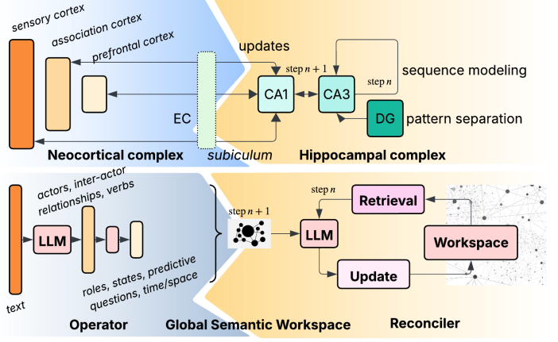

Publications
Reviewer for T-ITS, NIPS 2025, AAAI 2026, ICLR 2026
2026
-  AAAI 2026 OralBeyond Fact Retrieval: Episodic Memory for RAG with Generative Semantic WorkspacesIn International Conference on Artificial Intelligence (AAAI) 2026
Reviewer for T-ITS, NIPS 2025, AAAI 2026, ICLR 2026
 ICLR 2026
ICLR 2026